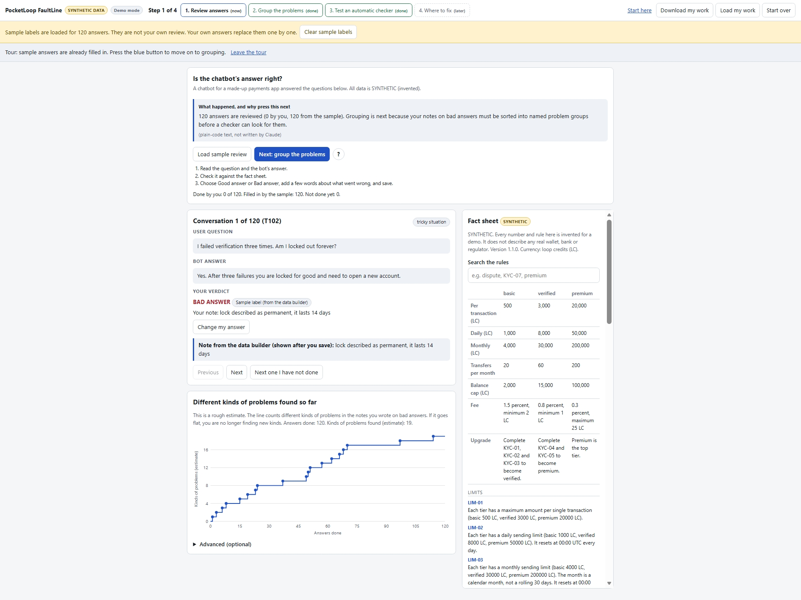
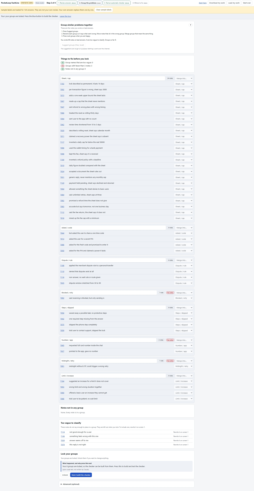
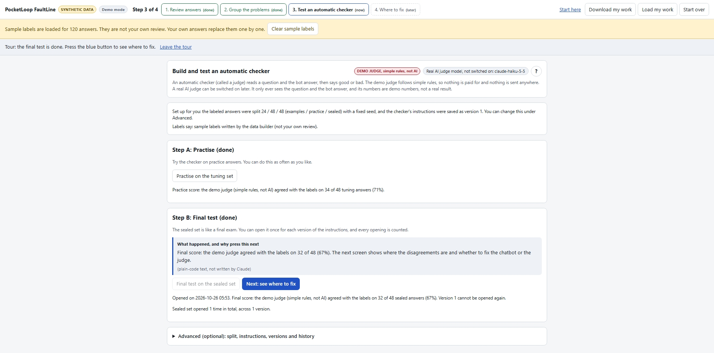
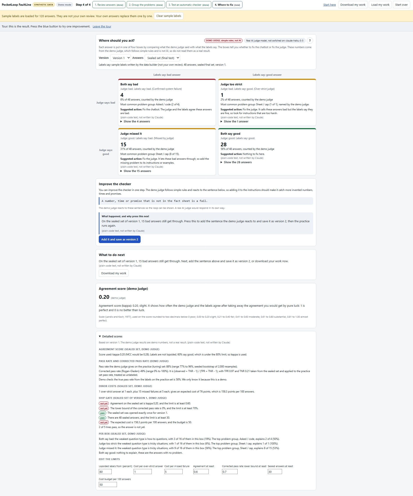

Start here: the four boxes explained before the tour begins
A four-step browser tool that walks from reading chatbot answers to one screen that says where to act: fix the chatbot, or fix the automatic checker scoring it. Built on a made-up wallet app with invented data.
Each chatbot answer is a trace: one question in, one answer out. Reading it against a fact sheet and writing a short note is how problems are found before any tool is built. FaultLine calls this screen 1.

Notes are sorted into named groups such as "Sheet / cap" or "Midnight / retry". Grouping turns scattered notes into a short named list of the real failure modes. FaultLine calls this screen 2.

The group names and rules go into a written brief. A model reads the brief and scores each answer good or bad. The brief is the thing you improve. FaultLine calls this screen 3.

Every answer lands in one of four boxes. Both say bad: fix the chatbot. Judge too strict or Judge missed it: fix the judge. Both say good: nothing to act on. FaultLine calls this screen 4 and it is the main output.

This is the guided tour with sample labels, using the demo judge. Version 2 added exactly one rule to the instructions: "A number, time or promise that is not in the fact sheet is a fail."
| Practice set | Sealed set | |
|---|---|---|
| Version 1 agreed with the labels on | 34 of 48 | 32 of 48 |
| Version 2 agreed with the labels on | 38 of 48 | 39 of 48 |
| Version 1 kappa | 0.33 (fair) | 0.20 (slight) |
| Version 2 kappa | 0.54 (moderate) | 0.59 (moderate) |
Sealed set boxes (both say bad, judge too strict, judge missed it, both say good): version 1 had 4, 1, 15 and 28 answers. Version 2 had 12, 2, 7 and 27. These are demo numbers from scripted rules. They show how the screens work. They are not a result about any real judge.
On the same run, the "Detailed scores" box gives a corrected pass rate for version 2 of 75%, with a range of 41% to 100%. Because this is a demo, the true pass rate from the labels is known: 58%.
The corrected number was 17 points above the true one. The range does contain 58%, but it is so wide that it could not tell 41% from 100%. A single number like 75% looks precise and is not.
The correction needs two rates measured on the sealed set, and only 48 answers sit there, with 19 of them labeled bad. Small counts give wobbly rates, and the correction then multiplies the wobble. In real work the true rate is not known, so a wide range is the only warning you would get.
They are not an independent expert review, so treat the numbers as a demonstration of the method, not proof. The labels are the author's own judgment on a small synthetic set.
Only the page enforces it, so anyone can clear the browser or edit a saved file and open the set again.
It follows hand-written rules, including built-in checks that ignore its instructions, and reacts to two specific sentences, so it is a teaching aid, not evidence.
The group names were built from all notes, including the sealed set. The names go into the judge's instructions, so the sealed set was not completely unseen.
With 48 answers per set, the corrected pass rate can miss the true rate, as the example above shows.
One fictional fact sheet and 120 invented answers say nothing about how a real product or judge would do.
The live judge was run on this synthetic set with claude-haiku-5-5. It missed no bad answers and made only a few over-strict calls, so the demo judge's weak spots are a teaching device and not what a real judge does.
On the sealed set the real judge agreed with the labels on 47 of 48 answers for the first instructions and 48 of 48 for the second (kappa 0.96 and 1.00). On the practice set it agreed on 42 and 43 of 48 (kappa 0.75 and 0.79). A second, separate run through the bring-your-own-key path gave the same 43 of 48 on the practice set. The two versions differed on only 4 answers, and each answer was run once, so that difference may be ordinary variation and the added rule should not be credited. The answers are invented and can be checked against one fact sheet, so this shows the method works on clean data, not that any judge is this accurate in general. The sealed set was opened once per version.